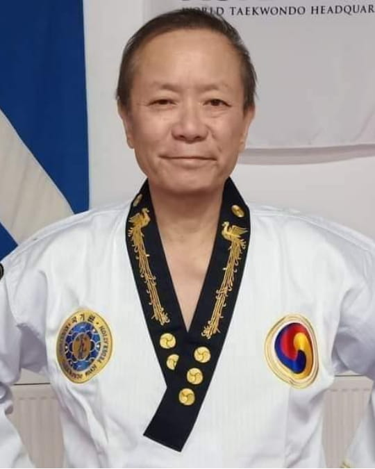

A first-generation Taekwondo pioneer. Five decades on the mat. The only Grand Master in the world to hold 9th Dan Black Belts from five prestigious organisations.

Grand Master Han Wong, originally from Malaysia, has been a pivotal figure in Taekwondo for over 50 years. As a pioneer of WTF-style Taekwondo in Edinburgh, Scotland, he initially came to the UK for education but has since made it his home, continuing to teach and inspire new generations of martial artists.
Grand Master Han holds the unique honour of being the only Taekwondo Grand Master in the world to have earned a 9th Dan Black Belt from five prestigious organisations. His Taekwondo journey began in the ITF style, where he earned his black belt under the legendary Grandmaster Rhee Ki-ha, before training alongside pioneers like Grandmasters Choi Kwang Jo and Park Jong So.
Throughout his career, Grand Master Han has received numerous accolades for his contributions to Taekwondo, including awards from the late General Choi Hong Hi. Despite having overcome cancer, he remains actively involved in teaching and judging at the highest level.
His influence extends beyond the UK — he established Jidokwan and Changmookwan schools in India and the Philippines. His charitable work over recent years has positively impacted over 1,000 families, supporting flood victims and providing essentials such as food, clothing, school supplies, and medical aid.
At Han Wong International Taekwondo, our mission is to honour and promote the rich heritage of Taekwondo as a discipline rooted in tradition, respect, and resilience. Guided by the philosophy of "No Politics, Only Traditional Taekwondo Training," we strive to create an environment where students and practitioners can fully immerse themselves in the authentic practice of Taekwondo.
Our focus is on cultivating mental strength, physical endurance, and personal growth, ensuring that each member gains a deeper understanding of Taekwondo's true values beyond competition.
We believe that every individual, regardless of background, deserves access to genuine Taekwondo teachings that prioritise personal development and respect over rivalry. Through our tournaments, charitable work, and community programs, Han Wong International stands as a beacon of traditional Taekwondo, empowering practitioners to embrace the discipline's foundational values and carry them forward with pride and authenticity.
When the world locked down in 2020, traditional Taekwondo training and competition came to a halt. Dojangs faced unprecedented challenges — students lost connection to their goals, masters lost their tournaments, communities lost their gatherings.
Grand Master Han Wong saw a chance to keep the spirit of competition alive while using it as a force for good. The first online Taekwondo charity championship was born — providing athletes a way to compete safely from home, channelling every dollar to those in need.
What began as a necessity became a movement. Over five years, HWI has hosted 12+ international events, welcomed 1,000+ athletes from 50+ countries, donated over $10,000 to charity, and been featured by more than 200 publications worldwide.